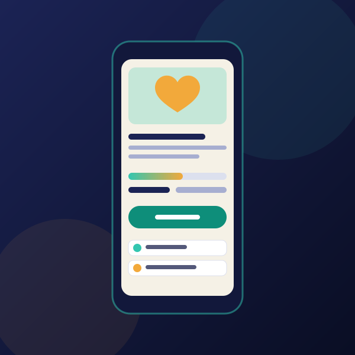

Galang Donasi Online yang Transparan, Tanpa Rekap Manual
Website donasi siap pakai untuk yayasan, masjid, sekolah, dan komunitas. Kampanye, verifikasi donasi, dan laporan penyaluran terbuka dalam satu tempat.
- Maintenance 1 tahun (paket sekali bayar)
- Security audit sebelum serah terima
- Demo bisa dicoba langsung

Masih galang dana lewat chat dan transfer manual?
Awalnya terasa cukup. Lalu penggalangannya membesar.
Donasi tercecer
Bukti transfer menumpuk di chat grup dan sulit dicocokkan satu per satu.
Rekap memakan waktu
Total terkumpul dan daftar donatur dihitung manual, rawan salah angka.
Donatur ragu
Tanpa laporan penyaluran yang jelas, kepercayaan sulit dibangun.
Semakin besar penggalangan, semakin berat mengurusnya. Satu angka yang keliru atau laporan yang terlambat bisa membuat donatur berhenti percaya.
Satu website untuk semua urusan donasi
Dari halaman kampanye sampai laporan penyaluran, semuanya rapi dan bisa dipantau kapan saja.
Halaman kampanye lengkap
Cerita, foto, target, progres dana, dan kabar terbaru. Donatur paham ke mana dananya.
Transfer bank & QRIS
Donatur transfer lalu unggah bukti, tanpa perlu memasang aplikasi tambahan.
Verifikasi & kuitansi
Admin memverifikasi setiap donasi, dan donatur dapat kuitansi sebagai bukti.
Laporan penyaluran terbuka
Pengeluaran dicatat dan ditampilkan, sehingga kepercayaan donatur terjaga.
Dasbor admin
Ringkasan total terkumpul, donasi menunggu verifikasi, dan grafik per kampanye.
Tampilan bisa diubah sendiri
Logo, favicon, warna tema, dan teks beranda diganti lewat panel admin tanpa programmer.
Dukungan donatur
Tombol dukung dan pesan doa dari donatur membuat kampanye terasa hidup.
Nyaman di semua layar
Rapi di HP, tablet, dan desktop, plus mudah dibagikan lewat WhatsApp.
Dari konsultasi sampai siap menerima donasi
Konsultasi gratis
Ceritakan jenis penggalangan dan kebutuhan lembaga Anda lewat WhatsApp.
Setup & penyesuaian
Logo, warna, nama, rekening, dan kampanye pertama disiapkan sesuai identitas Anda.
Serah terima & pendampingan
Sistem diserahkan setelah pengecekan keamanan, dengan maintenance penuh selama 1 tahun pada paket sekali bayar.
Lihat demonya sebelum memutuskan
Jelajahi halaman kampanye, alur donasi, dan tampilannya di HP maupun desktop. Data pada demo hanyalah contoh.
Pilih yang paling cocok
Sekali bayar (OTP)
Domain bawaan (vercel.app) dan maintenance 1 tahun. Domain pribadi (.com/.id) bersifat opsional, tambahan Rp250.000.
Langganan bulanan
Coba dulu tanpa komitmen besar dan berhenti kapan saja. Cocok dan mantap? Upgrade ke sekali bayar kapan saja, dengan potongan senilai 1 bulan langganan terakhir.
Pembayaran otomatis lewat Midtrans bersifat opsional, tidak wajib. Perizinan penggalangan dana mengikuti aturan yang berlaku dan menjadi tanggung jawab lembaga penyelenggara.